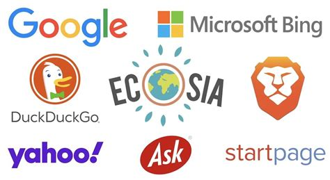

Search Engine Round Up early 2025

Listed below is the current state of play with the worlds most popular and active search engines.
Written By: Geovian
Date: 17 March 2025
Introduction
Everybody uses a search engine on their computer or phone. That much is a given. Just what search engine an individual uses is based on a series of decisions relative to their requirements such as language, location, how far back in time you need to refer to, and so on.
This list will be fairly extensive. The results have come directly from AI, I am just the messenger. Read on.
The Detail
Benefits
- Wide range of search results: Google provides a comprehensive set of search results, including web pages, images, videos, and more.
- Accurate results: Google's algorithms are highly effective at delivering relevant and accurate search results.
- User-friendly interface: Google's simple and intuitive interface makes it easy for users to find what they're looking for.
- Fast and smooth browsing: Google's optimized performance and caching technology offer fast and smooth browsing experiences.
- AdWords and Adsense integration: Google's AdWords and Adsense platforms allow businesses to create targeted ads and monetize their content.
- Google Maps integration: Google's mapping technology provides users with accurate and up-to-date location information.
- Google Analytics integration: Google's analytics platform helps businesses track website traffic, engagement, and conversion metrics.
- Multilingual support: Google supports multiple languages, making it a global search engine.
- Continuous updates and improvements: Google regularly updates and refines its algorithms to improve search results and user experience.
Drawbacks
- Data collection and tracking: Google collects user data, which can be used for targeted advertising and may raise privacy concerns.
- Personalized results: Google's personalized results may be biased towards users' previous searches and interests.
- Ad-heavy results: Google's search results often include ads, which can be distracting and cluttered.
- Limited search depth: Google's search results may not be as comprehensive as other search engines for certain topics or domains.
- Censorship and bias: Google has faced criticism for censoring or biasing search results in certain regions or topics.
- Algorithmic changes: Google's frequent algorithmic changes can impact website rankings and traffic.
- Dependence on Google's indexing: Websites may struggle to get indexed by Google, which can impact their visibility and search engine rankings.
Bing
Benefits
- Similar results to Google: Bing's search results are often similar to Google's, making it a good alternative for users who want a similar experience.
- Rewards program: Bing's rewards program, Bing Rewards, offers users points for searching, which can be redeemed for cash, gift cards, or other rewards.
- Visual search results: Bing's visual search results include images, videos, and other multimedia content, making it easier for users to find what they're looking for.
- Integration with Microsoft services: Bing is tightly integrated with Microsoft services, such as Windows, Office, and Outlook, making it a convenient choice for Microsoft users.
- Multilingual support: Bing supports multiple languages, making it a global search engine.
- Continuous updates and improvements: Bing regularly updates and refines its algorithms to improve search results and user experience.
- Ad-free results: Bing offers ad-free results for users who sign up for a Bing account and enable ad-free search.
Drawbacks
-
Fewer search results: Bing's search results are often fewer in number compared to Google, which can make it harder for users to find what they're looking for.
-
Less accurate results: Bing's search results may not be as accurate as Google's, particularly for niche or technical topics.
-
Limited geographical support: Bing's indexing and support may be limited in certain regions or languages. 4 Dependence on Microsoft services: Bing's integration with Microsoft services can make it less appealing to users who don't use Microsoft products.
-
Less developer support: Bing has less developer support compared to Google, which can make it harder for developers to optimize their websites for Bing.
-
Less transparency: Bing's algorithms and ranking factors are less transparent compared to Google, which can make it harder for users to understand how Bing ranks search results.
-
Less mobile optimization: Bing's mobile search experience is not as optimized as Google's, which can make it harder for users to search on mobile devices.
DuckDuckGo
Benefits:
- Privacy: DuckDuckGo is a private search engine that doesn't collect or store any personal data, including search history, IP addresses, or cookies.
- No tracking: DuckDuckGo doesn't track users across multiple websites or use third-party tracking scripts.
- Fast and simple interface: DuckDuckGo has a clean and simple interface that makes it easy to search and find what you need.
- No ads: DuckDuckGo doesn't display ads, making it a clutter-free search experience.
- Instant answers: DuckDuckGo provides instant answers and definitions for many search queries, making it a convenient search experience.
- Open-source: DuckDuckGo's code is open-source, allowing developers to contribute and improve the search engine.
- No personalization: DuckDuckGo doesn't personalize search results based on user behavior, ensuring a more neutral search experience.
Drawbacks:
- Limited index size: DuckDuckGo's index size is smaller compared to Google's, which can affect the accuracy of search results.
- Less accurate results: DuckDuckGo's search results may not be as accurate as Google's, especially for complex or niche topics.
- Limited features: DuckDuckGo lacks some advanced features, such as image search, video search, or news search.
- No location-based search: DuckDuckGo doesn't provide location-based search results, which can be limiting for users who need to find local businesses or services.
- Limited international support: While DuckDuckGo supports many languages, its international support is not as robust as Google's, which can affect the accuracy of search results in non-English languages.
- Limited customer support: DuckDuckGo's customer support is available online, but it may not be as responsive as Google's support.
Overall, DuckDuckGo is a great option for users who value their privacy and want a clutter-free search experience. However, it may not be the best choice for users who need more advanced features or more accurate search results.
Yandex
Mostly for Russian users.
Benefits:
- Browser efficiency: Yandex is better than Google in terms of browser efficiency, especially in slow internet connections.
- Fast and relevant search results: Yandex provides relevant search results quickly, thanks to its advanced algorithm and analysis of user behavior, location, and search queries.
- Localized search results: Yandex shows localized search results based on the user's current location, making it useful for finding places and businesses in specific areas.
- Search history: Yandex deletes search history after 3 months, providing a safer search experience compared to Google.
- Privacy and security: Yandex provides top-tier security and privacy to users, protecting their data and ensuring a secure search experience.
- User-friendly interface: Yandex has a simple, easily navigating, and user-friendly interface, making it easy for users to find what they need quickly.
- Unique features: Yandex has special features like Yandex Maps and Yandex Translate, which provide additional value to the user experience.
Drawbacks:
- Indexing speed: Google's indexing speed is better than Yandex, taking about 1 week to index pages compared to Yandex's 2-3 weeks.
- Technical SEO: Yandex has some limitations in technical SEO, such as not being able to index JavaScript websites and having a smaller number of URLs that can be monitored.
- Content quality check and ranking: Yandex's content quality check and ranking algorithm may not be as robust as Google's, which can affect the accuracy of search results.
- Language variation and support: While Yandex has a large number of languages supported, its translations may not be as accurate as Google's.
- Customer support: Yandex's customer support is available 24/7, but some users may find it less responsive than Google's support.
Overall, Yandex has its strengths and weaknesses, and users may prefer it over Google depending on their specific needs and preferences.
Qwant
Mostly for French users.
Benefits:
- Private search results: Qwant doesn't track user data, offering unbiased results based on the query alone.
- No user data collection: Qwant doesn't collect personal data, ensuring users' online activities remain private.
- Independent indexing: Qwant uses its own indexing, unlike other search engines that rely on external data.
- Multiple languages and display modes: Qwant supports various languages and display modes, making it a versatile search engine.
- Search history is deleted: Qwant doesn't store search history, ensuring users' browsing activities remain private.
- Customizable filters: Qwant allows users to adjust filters for adult content and other preferences.
- Available on various platforms: Qwant can be accessed on MacOS, Linux, Windows, and mobile devices.
Drawbacks
- Limited geographical support: Qwant's indexing and support may be limited in certain regions or languages.
- Updates and language limitations: Qwant's updates and language support may be limited compared to other search engines.
- Image search quality: Qwant's image search quality may be subpar compared to other search engines.
- Need to install a custom cookie: Qwant requires users to install a custom cookie to save site preferences.
- No previous search recall: Qwant doesn't remember previous searches, which may be a drawback for some users.
- Limited engagement on mobile: Qwant needs to improve engagement with mobile users to increase its user base.
Brave
Benefits:
- Independent indexing: Brave Search uses its own, built-from-scratch index, unlike other search engines that rely on big tech for results.
- No secret methods or algorithms: Brave Search doesn't use secret methods or algorithms, ensuring unbiased and transparent results.
- No bias or censorship: Brave Search doesn't censor results, providing users with a comprehensive and accurate search experience.
- Private search results: Brave Search doesn't collect user data, ensuring private search results based on the query alone.
- Fast and smooth browsing: Brave Browser's optimized performance and Chromium-based engine offer fast and smooth browsing experiences.
- Ad-free experience: Brave Browser's built-in ad blocker eliminates intrusive ads, leading to faster page loading times.
- Resource optimization: Brave Browser reduces data consumption and speeds up browsing sessions, making it an efficient choice.
- HTTPS Everywhere feature: Brave Browser's HTTPS Everywhere feature enhances user privacy and security while browsing the web.
- Customizable filters: Brave Search allows users to adjust filters for adult content and other preferences.
- Available on various platforms: Brave Browser can be accessed on MacOS, Linux, Windows, Android, and iOS devices.
Drawbacks
- Still in beta: Brave Search is still in beta, which means it doesn't have highly refined results for certain languages, queries, or regions.
- Limited geographical support: Brave's indexing and support may be limited in certain regions or languages.
- Updates and language limitations: Brave's updates and language support may be limited compared to other search engines.
- Image search quality: Brave's image search quality may be subpar compared to other search engines.
- Need to install a custom cookie: Brave requires users to install a custom cookie to save site preferences.
- Limited engagement on mobile: Brave needs to improve engagement with mobile users to increase its user base.
Yahoo
Based on the provided search results, here are the benefits and drawbacks of the Yahoo search engine:
Benefits:
- Diverse content and services: Yahoo offers a range of services beyond its search engine, including Yahoo Mail, Yahoo Finance, Yahoo News, and Yahoo Sports.
- Photo-sharing platform: Yahoo owns Flickr, a photo-sharing platform that allows users to upload, organize, and share their photos with a community of users.
- Alternative search engine: Although Yahoo's search engine is not as dominant as Google, it still serves as an alternative for users seeking information online.
- Web portal: Yahoo provides a web portal with various services, including news, finance, and mail.
Drawbacks:
- Less dominant search engine: Yahoo's search engine is not as popular as Google's, which may limit its effectiveness.
- Potential for malware: As mentioned in the search results, Yahoo's search engine may be associated with malware or browser hijackers, which can compromise user safety.
- Redirects to unwanted websites: Yahoo's search engine may redirect users to unwanted websites, potentially leading to financial losses or data breaches.
- Limited features: Compared to other search engines, Yahoo's features may be limited, which may not provide users with the best search experience.
Please note that these benefits and drawbacks are based on the provided search results and may not be an exhaustive list.
Startpage
Benefits:
- Private search engine: Startpage does not collect or store user data, providing a high level of privacy for its users.
- No tracking: Startpage does not track user behavior or store IP addresses, ensuring users' online activities remain anonymous.
- Anonymous View: Startpage's Anonymous View feature allows users to visit websites anonymously, using a proxy to mask their IP address.
- Contextual ads: Startpage serves contextual ads based on search keywords, rather than behavioral ads that track user behavior.
- Free search engine: Startpage is a free search engine that does not require users to create an account or provide personal information.
- Competitive search results: Startpage's search results are comparable to Google's, providing users with accurate and relevant information.
- No logs policy: Startpage has a no-logs policy, meaning it does not store any user data or search history.
- Third-party audit: Startpage's privacy features were documented by a third-party audit, providing evidence of its commitment to user privacy.
Drawbacks:
- Based in the Netherlands: Startpage is based in the Netherlands, which is a member of the "Nine Eyes" countries that share intelligence and data.
- Slower search results: Startpage's search results may be slightly slower than Google's, due to its use of a proxy to mask user IP addresses.
- Limited features: Startpage's features may be limited compared to Google's, which may not provide users with the same level of functionality.
- No Google-style extras: Startpage does not offer Google-style extras, such as a calendar or email service, which may be a drawback for some users.
- Dependence on Google: Startpage relies on Google's search results, which may be a concern for users who want to avoid Google's data collection practices.
Ecosia
Benefits:
- Tree planting: Ecosia plants trees for every search made on its platform, aiming to offset carbon emissions and promote reforestation.
- Carbon offsetting: Ecosia's carbon offsetting program helps to reduce greenhouse gas emissions and mitigate the impact of climate change.
- Private search engine: Ecosia does not collect or store user data, providing a high level of privacy for its users.
- No tracking: Ecosia does not track user behavior or store IP addresses, ensuring users' online activities remain anonymous.
- Free search engine: Ecosia is a free search engine that does not require users to create an account or provide personal information.
- Competitive search results: Ecosia's search results are comparable to Google's, providing users with accurate and relevant information.
- No logs policy: Ecosia has a no-logs policy, meaning it does not store any user data or search history.
Drawbacks:
- Limited features: Ecosia's features may be limited compared to Google's, which may not provide users with the same level of functionality.
- Dependence on Google: Ecosia relies on Google's search results, which may be a concern for users who want to avoid Google's data collection practices.
- Slightly slower search results: Ecosia's search results may be slightly slower than Google's, due to its use of a proxy to mask user IP addresses.
- Not all searches plant trees: Ecosia's tree planting program is funded by ads, and not all searches may result in the planting of trees.
- Verification of tree planting: There have been questions raised about Ecosia's tree planting program, with some users questioning the effectiveness of the program and the verification of tree planting.
- Limited transparency: Ecosia's tree planting program and carbon offsetting efforts may not be as transparent as some users would like.
Baidu
Mostly for Chinese users.
Based on the provided results from Brave Search, here are the benefits and drawbacks of the Baidu search engine:
Benefits:
- Chinese market research: Baidu is the best search engine for audience research, competitor analysis, and advertising for brands and creators targeting the Chinese market.
- Variety of products: Baidu offers many products besides a search engine, including maps, multimedia, and a Wikipedia-like website.
- Ad platform: Baidu has an ad platform similar to Google's, allowing brands to bid on keywords and display ads.
- User-friendly search functionality: Baidu's search engine is user-friendly and has good indexing capabilities.
Drawbacks:
- Clunky translation process: Baidu's translation process can be clunky, especially for non-Chinese users.
- Primarily works on Chrome: Baidu's translation tools work best on Chrome, which can be a limitation for users of other browsers.
- Limited privacy features: Baidu's privacy policy is brief and easy to understand, but it collects and uses personal information to customize search results.
- Requires searching in Chinese: To get accurate search results, users need to search in Chinese, which can be a challenge for non-Chinese speakers.
- Limited accessibility: Baidu is primarily used in China, and its search results may not be as relevant for users outside of China.
- Compliance with Chinese government restrictions: Baidu is subject to restrictions imposed by the Chinese government, which can limit its accessibility and functionality.
Wolfram Alpha
Mostly for technical and scientific users.
Benefits:
- Unique approach to search: Wolfram Alpha uses a computational knowledge engine approach, which provides direct answers to queries, complete with pertinent visualizations, dynamic computations, and informative data.
- Wide range of topics: Wolfram Alpha's databases cover a staggering array of subjects, from mathematics and science to society, culture, and everyday life.
- In-depth search tips: The platform provides users with detailed examples and guides on how to formulate queries effectively.
- Structured data: Wolfram Alpha uses a curated database of structured data to generate its responses.
- Expert-level knowledge: Wolfram Alpha brings expert-level knowledge and capabilities to the broadest possible range of people.
- Visualizations and computations: Wolfram Alpha can generate visualizations and perform dynamic computations to help users understand complex data.
Drawbacks:
- Limited relevance: Wolfram Alpha may not always provide the most relevant answer to a query.
- Limited data sets: Wolfram Alpha's results may be limited by the data sets it has access to.
- Not a traditional search engine: Wolfram Alpha is not a search engine, so it may not be the best tool for finding information on a specific topic.
- Steep learning curve: Wolfram Alpha's unique approach and interface may be confusing for some users.
- Premium version required for advanced features: The premium version of Wolfram Alpha, Wolfram Alpha Pro, is required for some advanced features and functionality.
- May not be suitable for casual users: Wolfram Alpha's complexity and uniqueness may make it unsuitable for casual users who are used to traditional search engines.
Ask
Based on the provided results, here are the benefits and drawbacks of the Ask search engine:
Benefits:
- Has various web search tools like dictionary, weather, conversation, famous people, stock quotes, smart answers, and more.
- Provides instant, accurate, and factual answers to user queries.
- Offers a question-and-answer model that can be useful for research assistance and homework help.
- Can be accessed through the iAsk AI search engine, which is a free alternative to CHATGPT.
Drawbacks:
- Was once considered a bad search engine due to its reliance on Google's search index and lack of innovation.
- Has a reputation for being a "junkware" and "spyware" purveyor.
- No longer operates its own search engine, instead partnering with other search engines for results.
- Has a limited focus on natural language queries and may not provide the most relevant results for complex queries.
- Has a history of being a "major" search engine that uses someone else's index, rather than developing its own search technology.
In Summary
As you can see, there's lots of benefits and drawbacks among all of the main contenders.
Now you'll notice that there is no specific mention of Apple or the entire Mac ecosystem. That's because Apple/Mac/Safari currently uses Google as it's search engine, though the AI that I was using this afternoon made mention that Apple are going to be swapping out Google for Duck Duck Go in the very near future.
It is highly likely that we will do another roundup of Search Engines maybe towards the end of the 2025 calendar year, just to see how things have moved along the timeline.
In the meantime have good fun dissecting this.